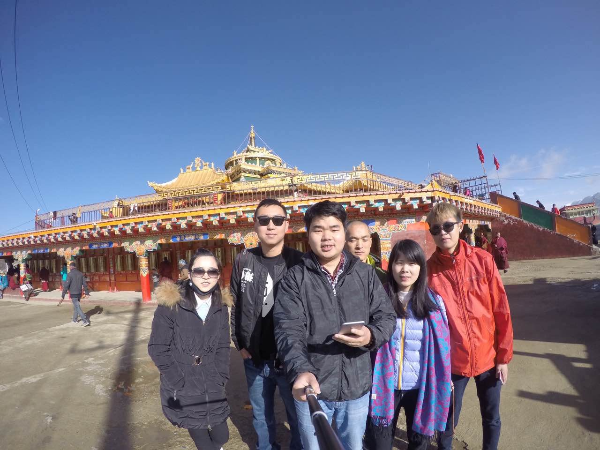

正文:
说在前面：正儿八经玩儿了三天知乎，收获1K的赞，虽然不算多，但我挺开心的。在这个世界里，得到别人信任或者认可，都是一件值得庆祝的事。但我真的真的希望看到我每个答案的人能保持“你不同意我的观点 但你不会妄加评判”。这是个问答社区，不是个撕逼社区。我很玻璃心，一碰就碎，谢谢。我想表达的观点是：旅行真的会使人改变。1.旅行小小满足了一把我的虚荣心。 这是点击率破四万的时候。（2012年）
这是点击率破四万的时候。（2012年）四年前，在深圳打完暑假工的我一个人去了一趟西藏。从广州到拉萨，55个小时的硬座。那是第一次全新的世界。旅行结束后，我觉得应该记录些什么。于是我利用好几个午休时间，翻过学校的院墙，去街上的小网吧里上百度贴吧写下了我的整个行程和感悟。无心插聊柳成荫。突然就收获了很多评论和关注，让我受宠若惊。后来甚至被百度贴吧推送了两次首页，这真的是让我始料未及。
我的心情当然是开心的。在此之前，我只是一个默默无闻的无名小卒而已，在一个小县城的小镇上念书，一点儿都不耀眼，甚至是不起眼。甚至当我那个时候在QQ空间说我要去西藏的时候。是遭受了很多白眼的。
但我做到了，我就是做到了。
帖子链接：
【图文直播】16岁男生坐上火车去拉萨，只为自由。2.旅行让我交到了更多的朋友。每一趟旅行，都能交到很多朋友。这些朋友来自五湖四海，天南海北。
他们每个人都有自己的身份，自己的故事，听到别人的故事，也能丰富自己的人生。
他们只是跟你进行了一场旅行，所以他们和你是志同道合的。跟你一点儿利益上的牵扯都没有。就是如此纯粹。
（13年我刚来上海的时候，住在一个1500块钱一个月的小单间里，这个哥们一路搭车到上海，我把我的半张床垫让给他睡，请他吃14块钱的菜饭骨头汤。三年过去了，我们依旧是很好的的朋友。）
（14年第一次去色达。在坛城偶遇的一位汉地来的师傅，聊得很投缘。而后的几年去色达，我都能碰到他。）
（前几天的呼伦贝尔旅行中，在恩和俄罗斯民族乡认识的俄罗斯族大叔。）
（去年的色达之行，认识的众多小伙伴。拿自拍杆的这个大哥在我最困难的时候对我伸出援助之手。）
（同样是前几天刚结束的漠河之旅。一个看我要去漠河就改签的天津大叔，一个在微博上偶遇的成都妹子，还有一个骑行满洲里在黑山头认识又在火车上重逢的大连理工研究生。）
（甚至因为旅行 知道这世界上有这样一个开着帆船去南极的男人）
3.旅行让我有了全新的人生观价值观世界观。严格说起来，我是个走野路子的人。休学，工作，创业。但我得自夸一句，任何谈吐见解，不一定会比别人差。这一切也是因为旅行，因为我去过很多地方，看过很多风景，人生观价值观世界观都会发生转变。
13年雅安地震的时候，我去灾区做了一个星期的帐篷老师。就那一个星期，让我真切地感受到如果我再不去做喜欢的事，可能某一天就真的没有机会了，所以在那之后的某个夜晚，我想通了。开始休学，一个人出来打拼。
（在雅安的点滴。）
小总结：
我现在的生活状态，是旅行所带来的改变。我现在的大多数朋友，都来自于旅行路上的志同道合。我现在所坚持的人生信条，都是我在旅行中感悟到的。我热爱旅行，现在是。多年后依旧是。———————— 分割线 —————————————
末尾附上之前写过的一点点小心情： 在今天这个不特别的时刻我要说一个我埋藏很久的秘密。
很久以前我最喜欢的一首歌是《樱花草》。种下了，一朵朵，青春璀璨的年少。多年轻而美好的歌词。
由此可见我真的没有骗你，我是一个玻璃少女心的人。我喜欢的音乐，大多是女歌手唱的，我最喜欢的作家，也是姑娘。但这并不是所谓的娘。我觉得女孩子细腻，有小心思，渴望浪漫和温暖。我具备这些特质，它们让我变得更加男人。而并不是一身肌肉加球鞋。男人就跟衣服一样，有很多款。你爱休闲我爱衬衫，本来也就是不冲突的。就在前半个小时，我翻到我写的第一篇帖子的截图，感慨万分地发到朋友圈，所有的评论一下子让我突然流泪满面。
那是好几年前，我用了几个午休的时间，翻过学校高高的院墙，在百度贴吧用图文直播的形式讲述了我去拉萨的整个行程。帖子没有写完，点击率一路飙升，我从一个不知名的小卒被很多人所知道。那是第一次有那么多陌生人给我鼓励。在当时我所在的那个不大的学校里，我提到梦想提到旅行，都会被一堆人说成异想天开。但我知道他们只看到了一条街，但我想的是一座城甚至是一个世界。所以你可想而知，我都顾不上学习，一条一条去回复别人的鼓励，一遍又一遍地说谢谢。我认识了很多跟我一样年纪的人，他们跟我一样有梦想有想法，一样得不到认可，想要改变。与此同时，我的成绩直线下滑，我的座位从前排到了后排。后来我索性放弃我自己，我把没用的课本和作业本从抽屉拿出来堆在桌子上，我就趴在下面做我自己的事儿。有的时候我一遍听着那些一知半解的情歌，一边写些欲赋新词强说愁的东西，有的时候，我在贴吧看别人的故事，和不同地方的人聊天南海北。那个时候我喜欢一个歌手叫许嵩，我MP3里都是他的歌，我会唱他的每一首作品，对他所有信息都了如指掌。有些喜欢开玩笑的同学来我面前叫许山高，我会跟他争得面红耳赤，甚至可能大打出手。但我不怕他们的嘲讽，我坚持我自己，我有我自己的世界。
后来的某一天，我猛然发现，这个帖子带给我更多的是骄傲和自以为是。回想来那是我最飘的一段时间，我甚至一度想丢下一切，去靠旅行挣钱，但我脑子里没有任何成型的计划。所以那个帖子给我的东西不只是名气，不只是朋友，还有更多的负作用。但我今天想说的，并不是那些负作用，而是因为这个帖子，我认识了你们。
我是个不舍得删任何东西的人。因为我随时能翻看，也能随时提醒我自己。我看到那些留下来的照片就像看到你们一样。我看到我休学去旅行，看到我逃课去支教。再看到后来我独自一人来上海，努力工作，也看到后来的艰辛创业。我看到我做了一件了不起的事情自己在表扬自己，也看到难过的时候一个人在角落垂头丧气。还有坚持自己的想法不惜顶撞老板，也有创业路上为了目标只能委曲求全。每一张照片我都熟悉，熟悉到我想要想起就能想起。每一张照片都是最真实的我自己。而每一张照片背后，都有一些好故事。我很久不去贴吧，qq都很少看，微博只是偶尔刷一刷。跟很多很多的老朋友都未曾联系，有的时候碰到打招呼的，虽然不记得还是要装作记得的样子，然后说一句伪善的好久不见。其实我很怀念每一个社交软件背后所认识的人。比起现实生活中阴差阳错的缘分，网络的虚拟更显得奇妙和珍贵。可能你觉得只是一个app，而我却当了真。所以我的朋友圈你点赞或许是一时兴起，但我却并不这样认为。我能够坚持走到现在，除了我自己给的鼓励，最多的就来自于你们的支持。
我可能不记得你的名字，但我一定记得跟你发生的故事。我可能换了很多个社交活跃地，交到了更多的新朋友，但我从来都没有忘记过初心。没有人比我更担心，我会走远，我会走偏，我会变得不像以前的我，我会变得自私势利狡诈市侩。我以前说，人越长越大，圈子越来越大，但真心的圈子却是越来越小。不太了解我的人觉得我太年轻，而明白我的人知道我内心跟年龄一点儿也不匹配。不了解的人觉得我坚强有乐观，但你们最清楚，我内心可能一碰就碎。一次冤枉一次误会，也会让我想到后半夜。爱所有人，信任少数人，不负任何人，这是我一直以来做人的信条。当我突然发现，很多很多的人都不见了，而我又无能为力去找回来的时候，我明白这些事成长要付出的代价，但这也够我难受好一阵子。所以如果说我有什么事儿没有做好，对不起你，我先跟你道歉，我希望你能够原谅我。因为我要进步，我想对得起你们，所以我要求我自己做得更好。我想做给那些当初觉得我们是异想天开的人看，梦想一定要有，而且一定会实现，没有万一。
如果我有一天不小心走着走着就走偏了，走远了，趁你还在看着我的时候，麻烦你及时叫住我，并且告诉我
叶凡你是最棒的，你会知道怎样才是正确。
我先替多年后的那个我谢谢你。
祝你好梦，还有永远开心。
完。
http://weixin.qq.com/r/7kgQCBbEH0tgrVJr9x38 (二维码自动识别)